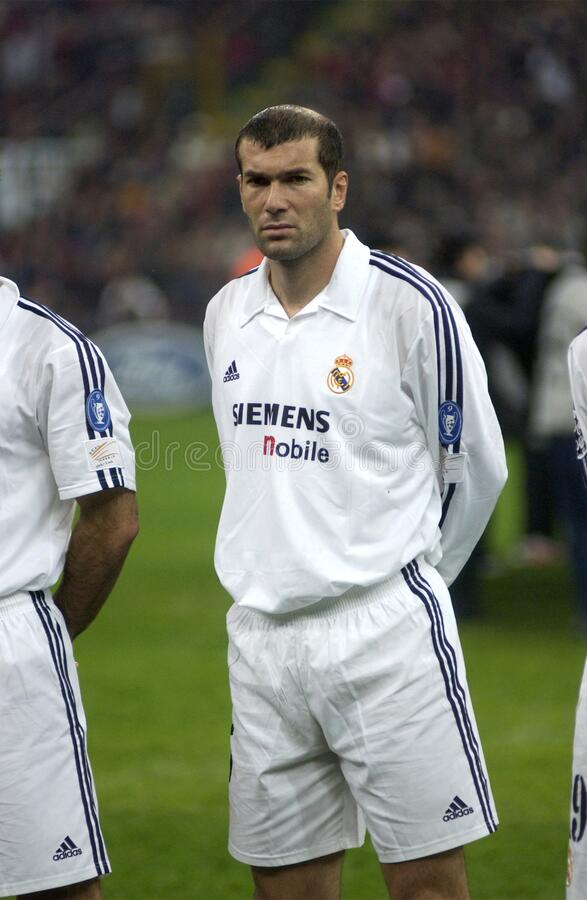

zinedine zidane
zinedine was one of the best players and mangers who were in madrid He has won the FIFA World Player of the year award three times in real madrid (2002, 2003) and as a mangers he had won "3" champions leagues in a row "2016,2017,2018"
